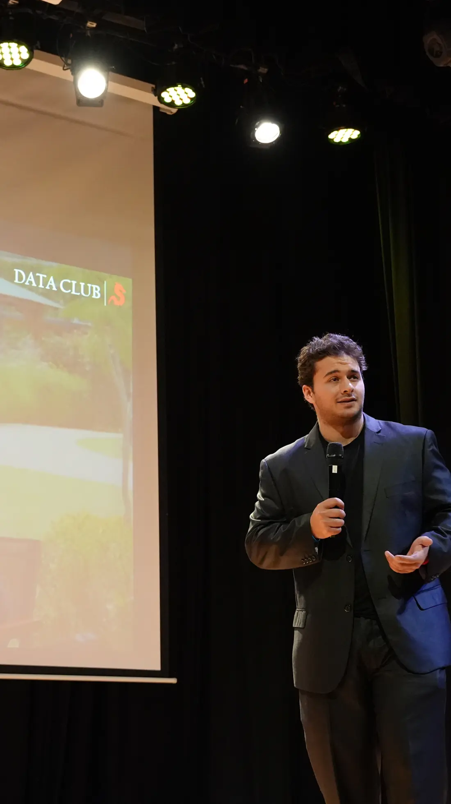

Análisis de datos para decidir a quién hablarle, con qué producto y en qué momento.
Trabajamos con la información que tu empresa ya tiene —ventas, CRM, punto de venta, redes y conversaciones— y la convertimos en decisiones para tus campañas.
Antes de producir una pieza revisamos los [datos|orange|ink] de tu empresa. Con ellos decidimos a [quién_hablarle,|red|bone] con qué [producto|peach|ink] y en qué [momento.|teal|ink]
Seis etapas,
un mismo ciclo.
El video es una etapa, no todo el servicio. Baja o toca cada punto para ver qué hacemos ahí y qué recibes al final.
Diagnóstico
Revisamos qué datos tiene la empresa, dónde están y en qué estado llegan.
Qué recibes- 01
Diagnóstico
Revisamos qué datos tiene la empresa, dónde están y en qué estado llegan.
Mapa de fuentesInforme de calidad - 02
Arquitectura y limpieza
Ordenamos la información en un solo lugar, con reglas claras de quién la usa y cómo.
Modelo de datosReglas de gobernanza - 03
Análisis y modelos
Buscamos patrones: qué se vende junto, quién repite, qué predice una compra.
SegmentaciónModelo predictivo - 04
Insight
La conclusión en una frase: a quién hablarle, con qué producto y en qué momento.
Insight accionableMensaje por segmento - 05
Campaña y producción
Cada pieza se produce para un segmento y un objetivo concretos.
GuionPiezas por formato - 06
Evaluación y ajuste
Medimos contra el objetivo, comparamos con la campaña anterior y corregimos la siguiente.
TableroPlan de ajuste
Cinco estaciones
antes del guion.
Si esta cadena no existe, el insight tampoco. Cada estación deja la información lista para la siguiente.
Fuentes
Ventas, CRM, web, punto de venta y redes en un solo inventario.
Gobernanza
Quién puede ver qué, cómo se nombra cada campo y quién responde por él.
Limpieza
Duplicados fuera, formatos parejos, huecos resueltos. Sin esto, nada de lo demás sirve.
Modelos
Segmentación, recomendación y predicción de recompra sobre datos ya confiables.
Insight
Una conclusión clara que se convierte en el brief de la campaña.
Cada grupo,
su propia pieza.
Los segmentos se definen con modelos estadísticos y cada uno recibe una pieza pensada para él. Pasa el mouse o toca una tarjeta para ver a qué clientes le habla.
Segmentación de clientes
Datos de ejemploCada punto es un cliente.
Medir mientras
la campaña corre.
Medimos contra el objetivo y ajustamos la producción mientras la campaña está al aire.
Resultado semanal de la campaña
Datos de ejemploLas líneas punteadas marcan los momentos en que el análisis cambió la producción.
v1 · lanzamiento
Piezas generales para toda la base.
v2 · nuevo gancho
El modelo mostró caída temprana: se rehízo el arranque.
v3 · segmento nuevo
Apareció un grupo con ticket alto: piezas propias para ellos.
El primer
entregable.
El estado real de tus datos, medido en cuatro frentes. Se contrata solo y es la puerta de entrada al resto del servicio.
Datos de ejemplo

Lo que dicen
tus clientes.
Las conversaciones de tu marca por WhatsApp e Instagram también son datos. Las convertimos en información clara para decidir qué vender, qué mejorar y qué comunicar.
- Tablero con los indicadores de tus chats
- Preguntas frecuentes y quejas, ordenadas por tema
- Alertas para atender primero las quejas más graves
- Ideas de publicaciones a partir de lo que preguntan
- Reportes semanales o mensuales fáciles de leer
Analítica y producción
en las mismas manos.
La analítica no es un agregado: es la formación principal del equipo. Por eso la campaña y la producción salen del mismo análisis.



Máster en Business Analytics
Formación de posgrado en analítica de negocios, aplicada a decisiones comerciales reales.
Analítica de CRM y BI
Experiencia profesional en análisis de clientes, sistemas de recomendación y reportería para dirección.
Modelos y segmentación
Limpieza, modelado y machine learning aplicados a bases de clientes, no a ejercicios de clase.
Producción propia
El mismo equipo dirige, filma y edita: el insight no se pierde al pasar de manos.
Formación USFQ. Fundadores del Data Club.
Marketing, Finanzas y minor en Análisis de Datos, más la Maestría en Business Analytics, toda la formación en la Universidad San Francisco de Quito. Ahí mismo fundamos el club de análisis de datos de la universidad.
@datausfq ↗El mismo equipo que enseña análisis de datos produce tu campaña.
Qué necesitamos
de tu lado.
No hacen falta plataformas nuevas: trabajamos con los sistemas que tu empresa ya utiliza.
Acceso de lectura
Ventas o CRM, aunque sea un exporte mensual en Excel.
Un objetivo del negocio
Qué producto mover, qué cliente recuperar, qué mes levantar.
Una campaña anterior
Para comparar contra algo y mostrar el seguimiento.
Hablemos
de tus datos. Agendamos una reunión y revisamos por dónde empezar.